LifeAngle Care — handleiding
Hoe je een woonzorgcentrum inricht, medewerkers uitnodigt, een bewoner overzet van thuis naar het woonzorgcentrum, en een verblijf afsluit. Stap voor stap, met de echte schermen.
1. Wie is wie?
LifeAngle heeft twee kanten. De familie werkt in de gewone app (Dashboard, Kalender, Familie, Wie ziet wat …). Het woonzorgcentrum werkt in LifeAngle Care, met een eigen menu: Vandaag, Bewoners, Overdracht, Team, Activiteiten, Weekplanning, Kamers, Nieuws, Importeren, Rapporten en Beheer. Beide kanten komen samen op één plek: de koppeling tussen het huishouden van de bewoner en het woonzorgcentrum.
Rollen in het woonzorgcentrum
| Rol | Wat die persoon kan |
|---|---|
| Beheerder | Alles inrichten: afdelingen, kamers, medewerkers uitnodigen, de koppelcode, bewoners toewijzen, een verblijf beëindigen, importeren. |
| Coördinator | Bewoners toewijzen en kamers beheren. Geen medewerkers uitnodigen. |
| Zorgmedewerker | Ziet de bewoners die aan hem of haar zijn toegewezen: agenda, zorgnotities, contactpersonen. Schrijft overdrachten en zorgnotities. |
| Team lead (per afdeling) | Een medewerker die op een afdeling team lead is, ziet alle bewoners van die afdeling, en kan in een noodgeval 4 uur meekijken bij een andere bewoner. |
Wat het zorgteam wel en niet ziet
| Ziet het zorgteam wel | Ziet het zorgteam niet |
|---|---|
| Naam, afdeling en kamer, agenda, contactpersonen, de zorgnotities die het zelf schrijft | Dagboek, documenten, locatie, en wat de familie onderling regelt. De directie en de beheerder zien geen persoonlijke gegevens. |
2. Voor je begint
- Elk persoon heeft een eigen e-mailadres. Inloggen gebeurt met een code van zes cijfers die per mail komt; een wachtwoord kan ook.
- De namen van de afdelingen en de kamernummers.
- Voor een snelle start: een Excel-lijst met de bewoners (naam, afdeling, kamer, en het e-mailadres van één familielid).
3. Het woonzorgcentrum registreren
Dit doet de beheerder één keer. Wie registreert, wordt meteen beheerder.
Open de registratiepagina
Log in en ga naar /zorg/nieuw.
Wil je eerst rondkijken? Klik dan op Demo-woonzorgcentrum openen. Dat maakt een proefomgeving met afdelingen, kamers en acht verzonnen bewoners, die je later met één klik wist.
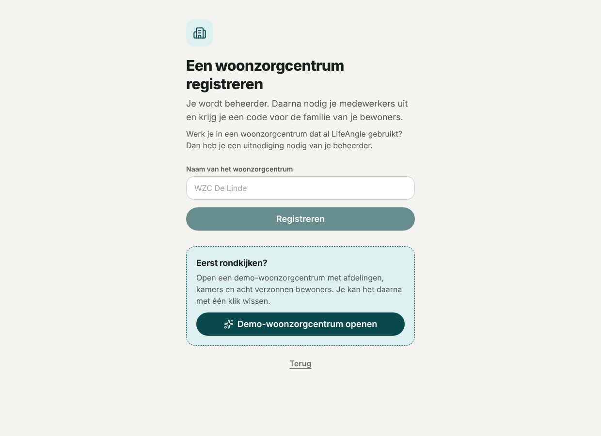
Naam invullen en registreren
Vul de Naam van het woonzorgcentrum in en klik op Registreren. Je komt meteen op Beheer.
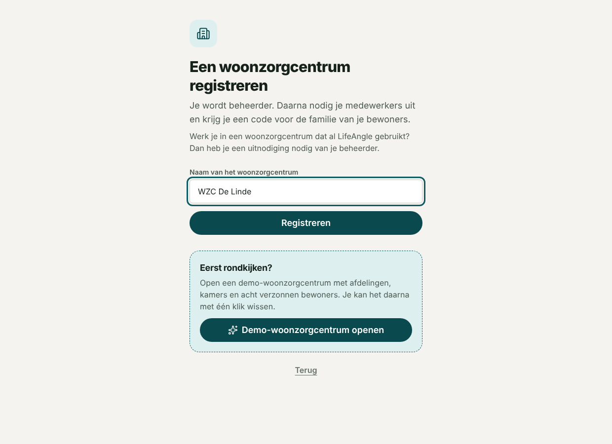
Eerst een afdeling maken, in Beheer
Scroll in Beheer naar de kaart Afdelingen. Vul bij Nieuwe afdeling een naam in en klik op Toevoegen. Doe dit voor elke afdeling.
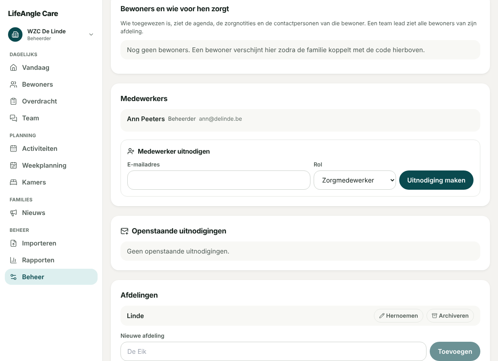
Kamers toevoegen
Ga in het menu naar Kamers. Kies onderaan bij Kamers toevoegen de afdeling, typ de nummers (een reeks zoals 101-110 of een lijst zoals 12, 14, 16), kies het aantal bedden per kamer en klik op 10 kamers toevoegen.
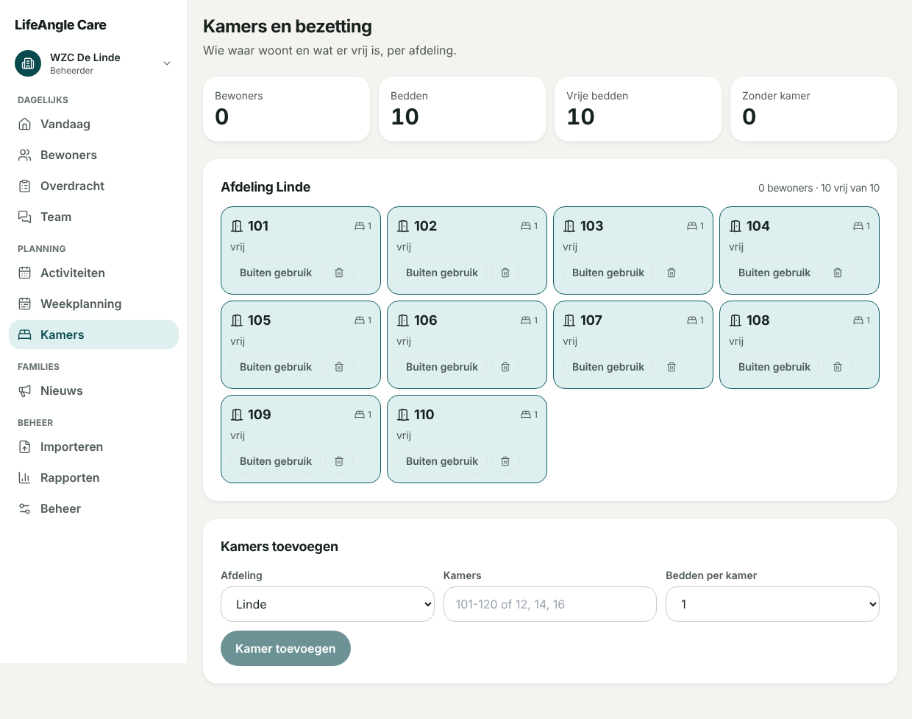
4. Medewerkers uitnodigen
Beheer openen
Klik in het menu op Beheer. Bovenaan staat het Overzicht met het aantal bewoners, medewerkers, afdelingen en open uitnodigingen, en wat aandacht vraagt.
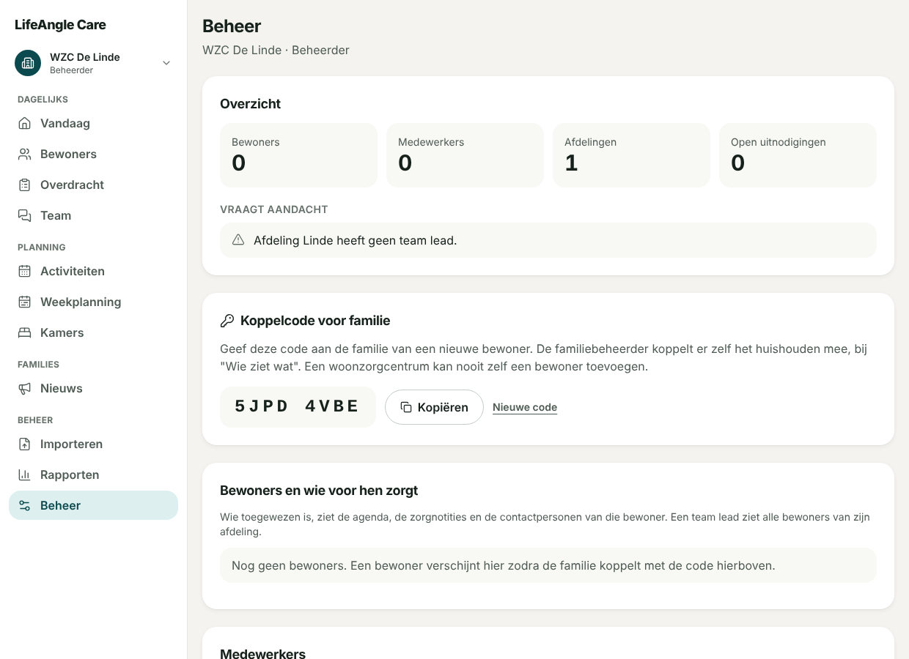
E-mailadres en rol
Ga naar de kaart Medewerkers → Medewerker uitnodigen. Vul het E-mailadres in, kies de Rol (Zorgmedewerker, Coördinator of Beheerder) en klik op Uitnodiging maken.
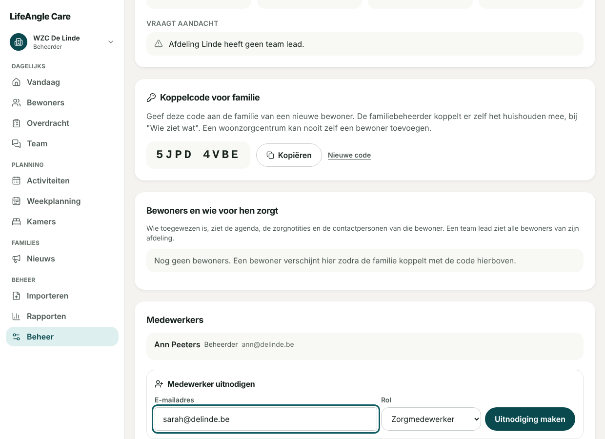
De link doorsturen
Is de mail vertrokken, dan staat er "De uitnodiging is gemaild." Anders zie je de link met Link kopiëren: stuur hem zelf door. De link werkt 14 dagen, alleen voor wie inlogt met dat e-mailadres.
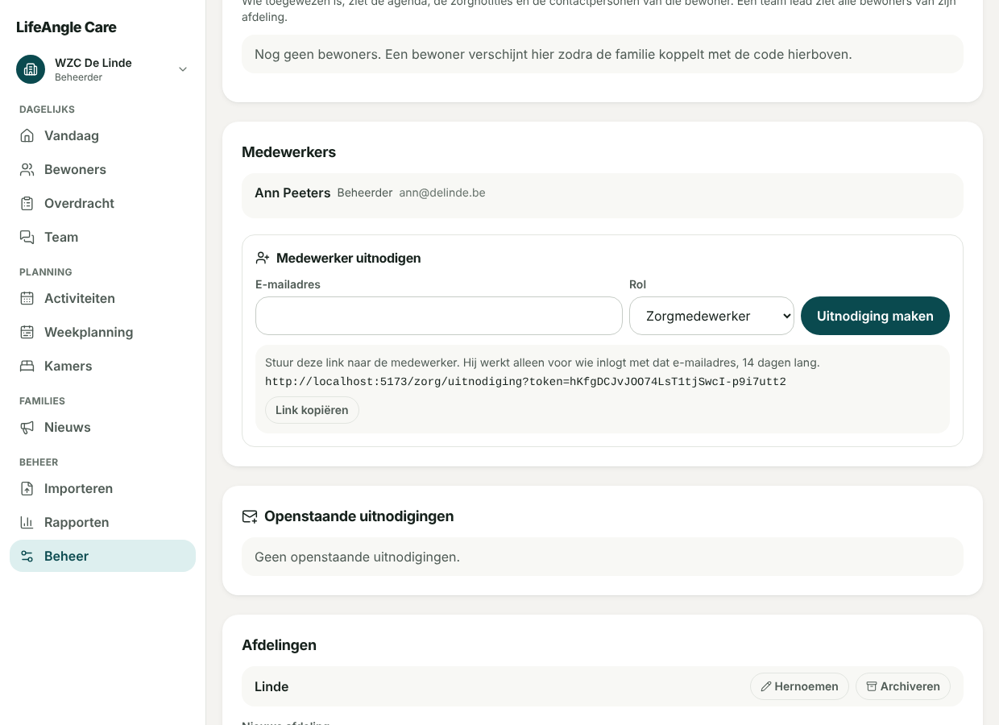
De uitnodiging staat meteen bij Openstaande uitnodigingen. Daar kan je ze opnieuw sturen (14 dagen langer geldig) of intrekken.
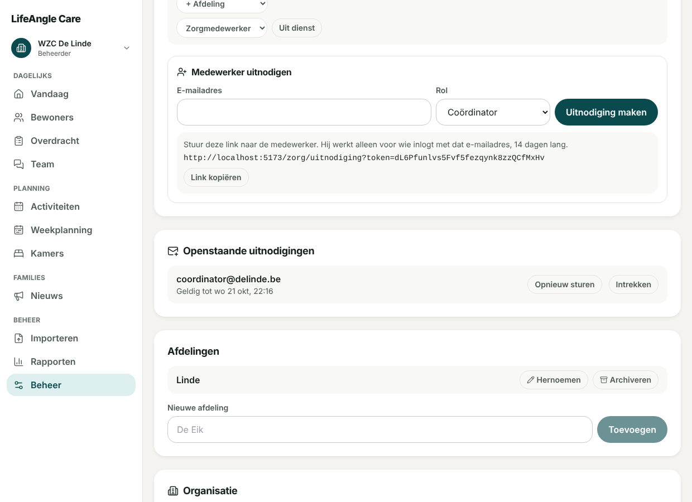
De medewerker opent de link en logt in
Wie de link opent en nog niet ingelogd is, ziet Je bent uitgenodigd. Vul het e-mailadres in waarop de uitnodiging kwam, klik op Stuur mij een code en vul de code van zes cijfers uit de mail in.
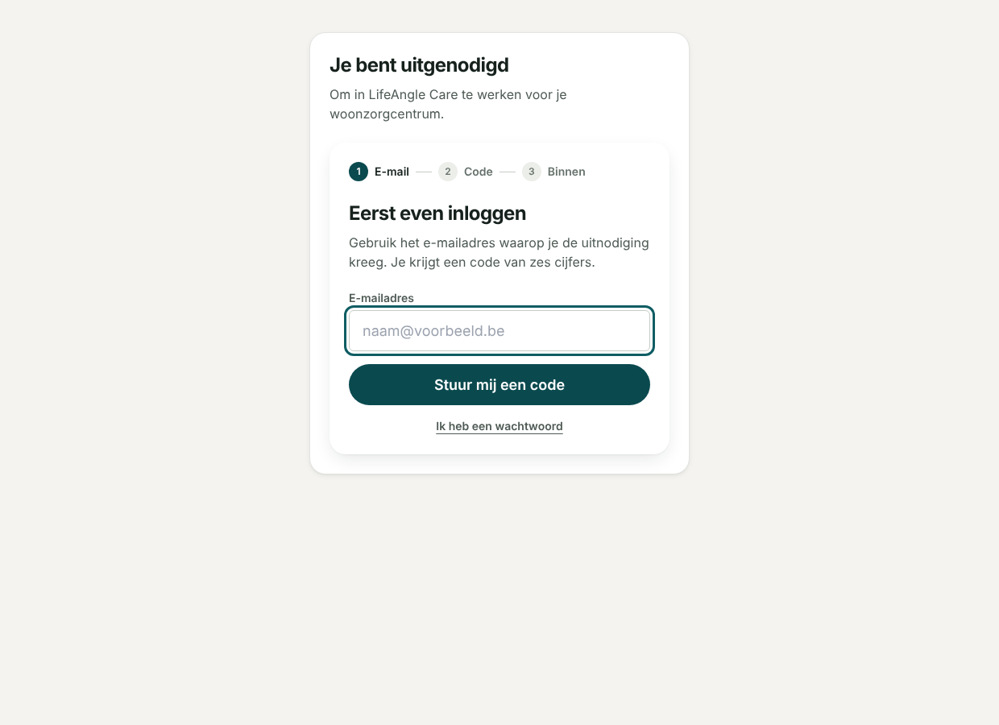
Uitnodiging aanvaarden
Na het inloggen: Uitnodiging aanvaarden. De medewerker komt in LifeAngle Care.
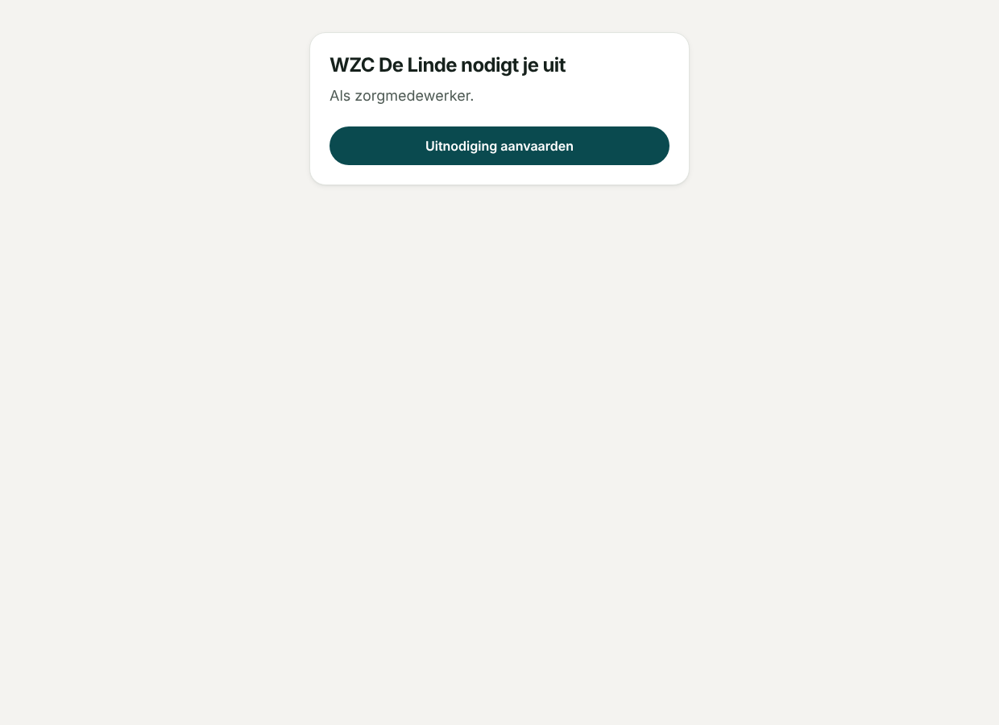
De medewerker op een afdeling zetten
In Beheer → Medewerkers staat bij elke medewerker + Afdeling. Kies de afdeling. Zonder afdeling kan een medewerker geen overdracht schrijven en staat er in het Overzicht "… staat op geen enkele afdeling".
5. Bewoners importeren uit Excel
Voor een woonzorgcentrum dat start met veel bewoners. Wie maar één bewoner heeft die al LifeAngle thuis gebruikt, slaat dit over en gaat naar deel 6.
Importeren openen
Menu → Importeren → Bewoners.
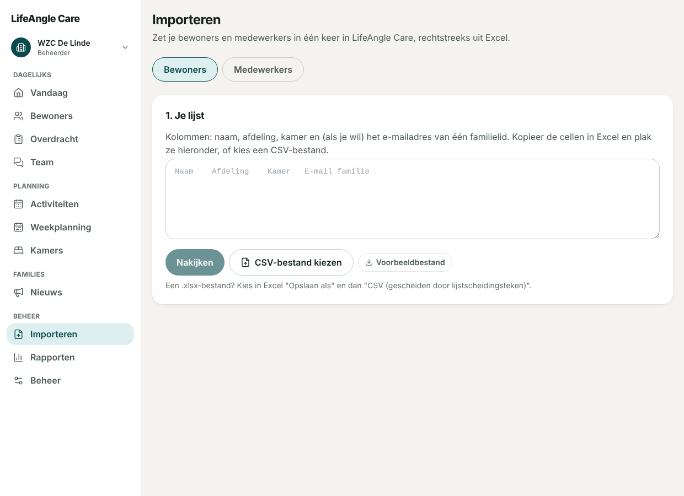
De lijst plakken
Vier kolommen, in deze volgorde: naam, afdeling, kamer, e-mail van één familielid (mag leeg). Kopieer de cellen in Excel en plak ze in het vak, of kies een CSV-bestand. Er is ook een Voorbeeldbestand. Klik op Nakijken.
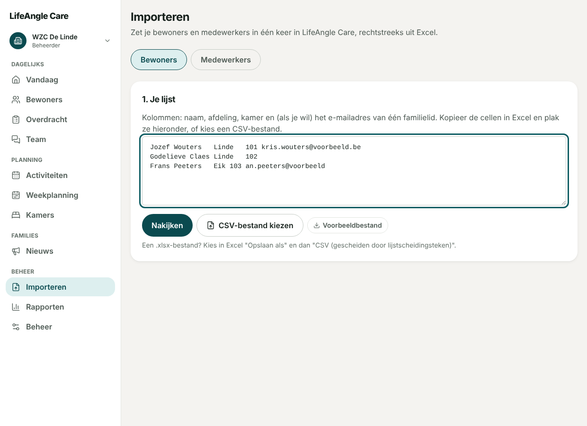
De controle lezen
Per rij staat klaar om te importeren of fout, met de reden. In het voorbeeld bestaat afdeling "Eik" niet en is het e-mailadres onvolledig: die rij wordt overgeslagen. Verbeter de lijst en plak opnieuw, of importeer eerst de goede rijen.
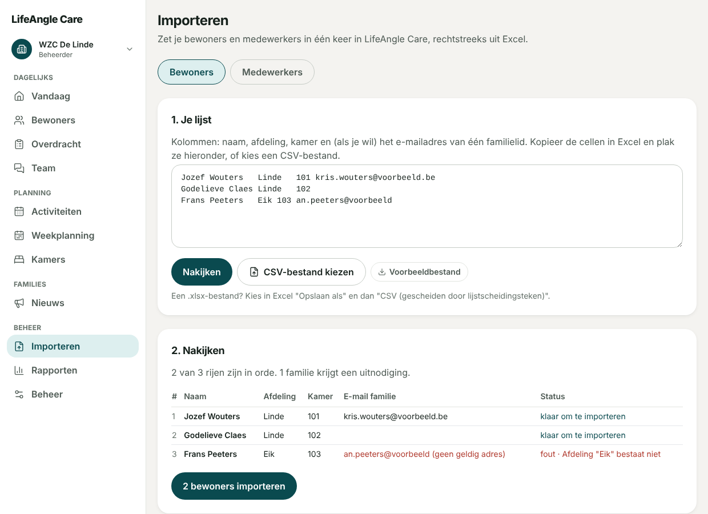
Importeren en de familie uitnodigen
Klik op 2 bewoners importeren. Bij Uitnodigingen voor de familie staat per gezin een link. Wie die opent met het opgegeven e-mailadres, wordt familiebeheerder. De link werkt 14 dagen. Met Alle links (CSV) download je ze allemaal.
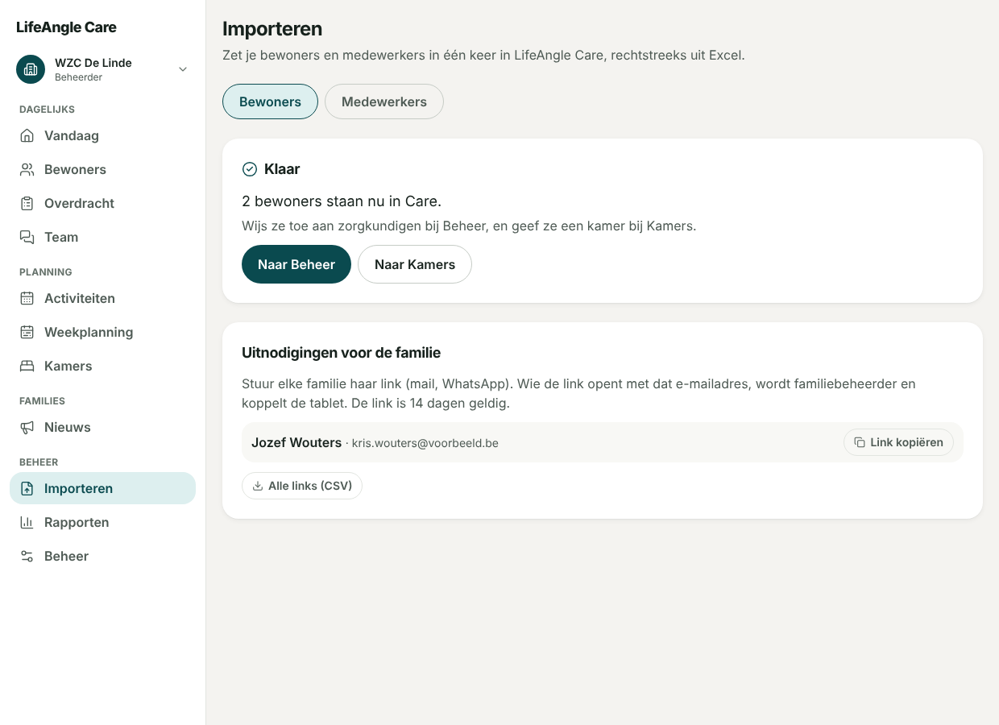
6. Een bewoner overzetten: de familie koppelt
Zo gaat iemand die thuis LifeAngle gebruikt, naar het woonzorgcentrum. Het huishouden blijft bestaan; er komt alleen een koppeling bij.
Het woonzorgcentrum geeft de koppelcode
In Beheer staat de kaart Koppelcode voor familie. De code heeft acht tekens, letters en cijfers (bijvoorbeeld 5JPD 4VBE). Klik op Kopiëren en geef de code aan de familie. Het is één code voor het hele woonzorgcentrum.
Nieuwe code maakt een nieuwe; de oude werkt dan niet meer. Doe dat alleen als de code bij de verkeerde mensen terechtkwam.
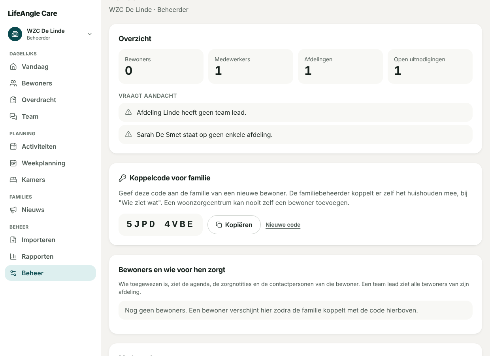
De familie opent "Wie ziet wat"
De familiebeheerder logt in de familie-app in en kiest in het menu Wie ziet wat.
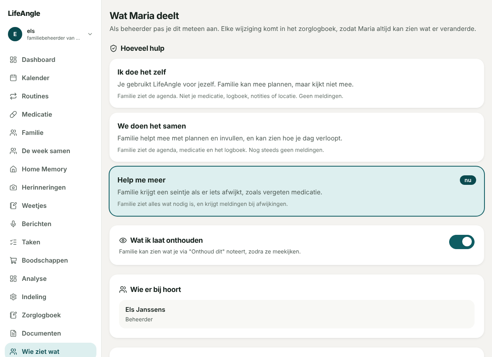
De code invullen en koppelen
Scroll naar Woonzorgcentrum, vul de Koppelcode in en klik op Koppelen.
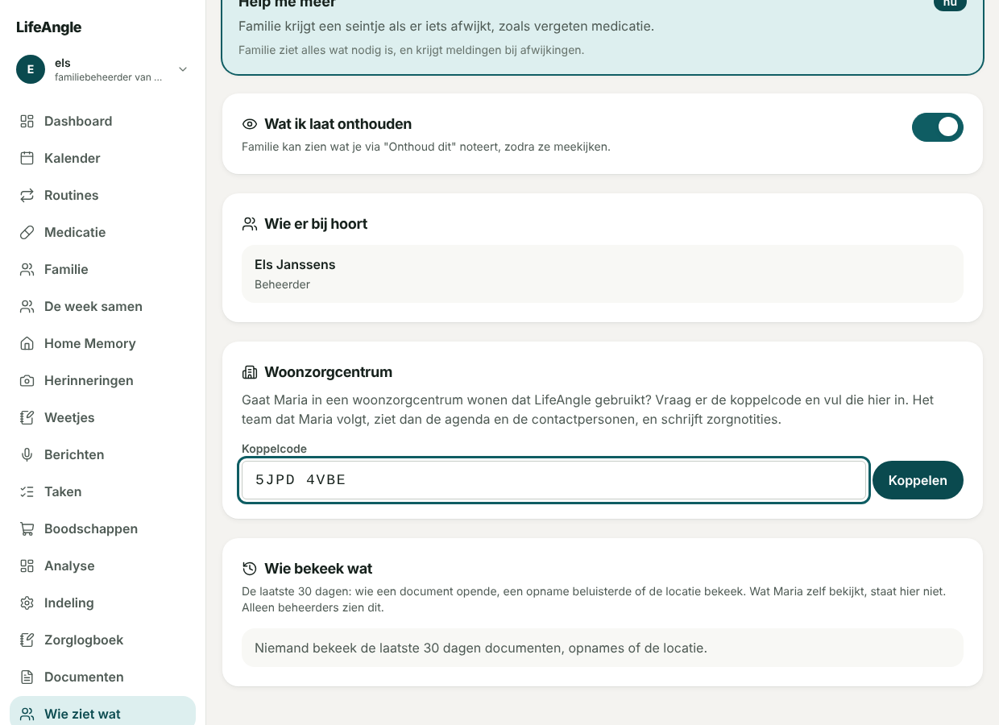
Gekoppeld
Het woonzorgcentrum staat erbij, met de uitleg over wat het team ziet. Zolang het woonzorgcentrum nog geen kamer gaf, staat er "Afdeling en kamer zijn nog niet ingevuld."
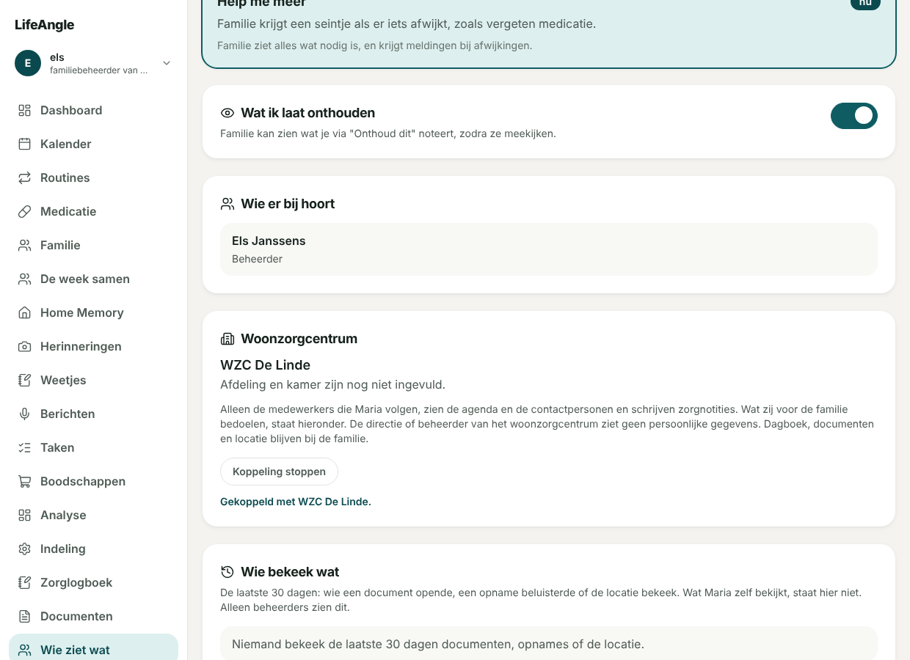
Met Koppeling stoppen beëindigt de familie de koppeling zelf. De medewerkers verliezen dan meteen hun toegang.
7. Kamer geven en medewerker toewijzen
De bewoner verschijnt in Beheer
Na het koppelen staat de bewoner in Beheer bij Bewoners en wie voor hen zorgt.
Afdeling en kamer
Klik bij de bewoner op aanpassen, kies de Afdeling, typ de Kamer en klik op Bewaren.
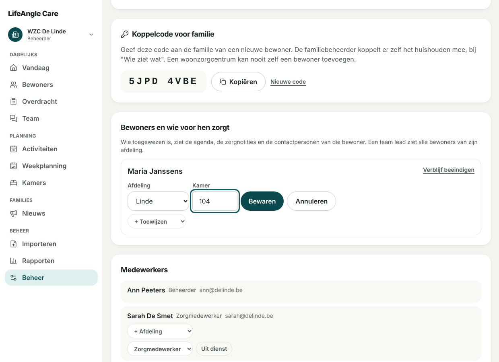
Een medewerker toewijzen
Kies bij + Toewijzen de medewerker. Die ziet vanaf dan de agenda, de zorgnotities en de contactpersonen van deze bewoner. Stoppen doe je met het kruisje naast de naam.
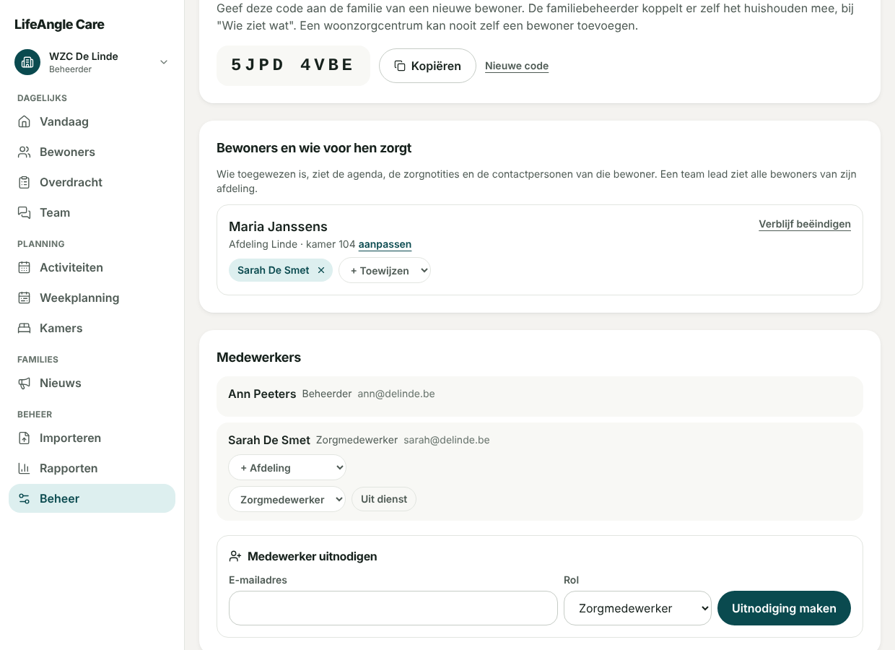
Controleren
De medewerker ziet de bewoner bij Bewoners → Mijn bewoners. De familie ziet bij Wie ziet wat de afdeling, de kamer en wie de bewoner volgt. Kamers toont de kamer als bezet.
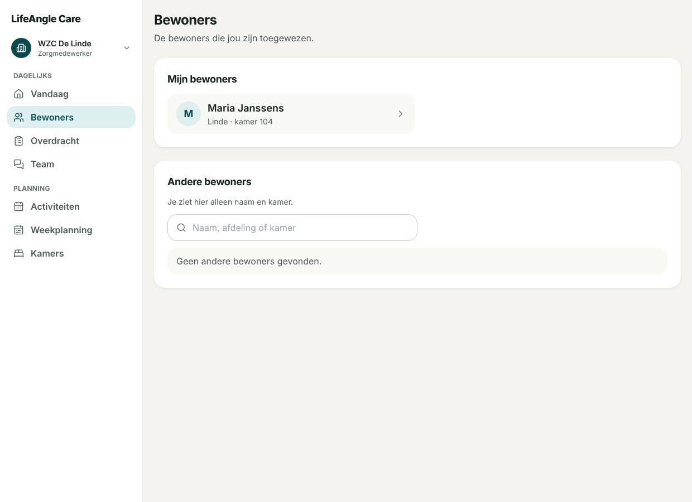
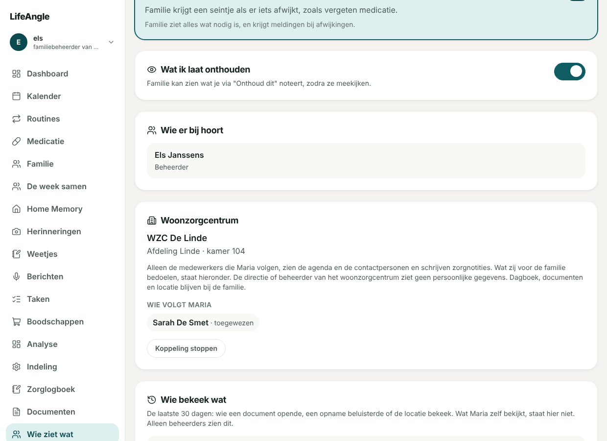
8. Een verblijf beëindigen
Bij een verhuis of overlijden. Bewust in twee stappen, zodat het niet per ongeluk gebeurt.
Verblijf beëindigen, reden kiezen
Klik in Beheer bij de bewoner op Verblijf beëindigen. Kies de reden: Verhuisd, Overleden of Andere reden, en klik op Verblijf beëindigen. Met Annuleren gebeurt er niets.
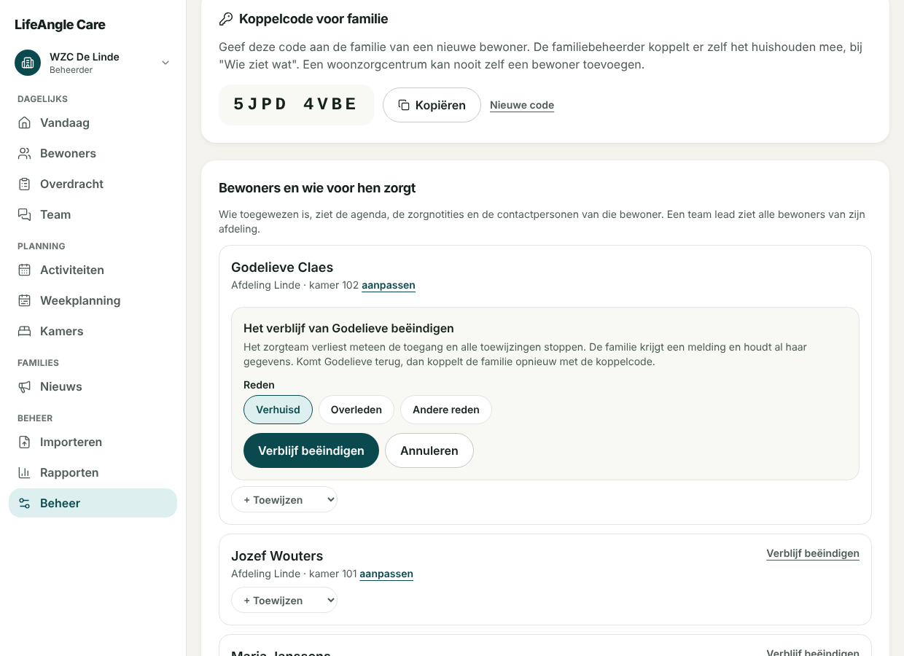
9. Overdracht tussen diensten
Overdracht in het menu is niet het overzetten van een bewoner. Het is het bericht van de ene dienst aan de volgende, per afdeling.
Een overdracht schrijven
Kies de dienst (Vroege dienst, Late dienst of Nachtdienst), schrijf wat de volgende dienst moet weten en klik op Overdracht bewaren. Onder De laatste dagen staan de vorige.
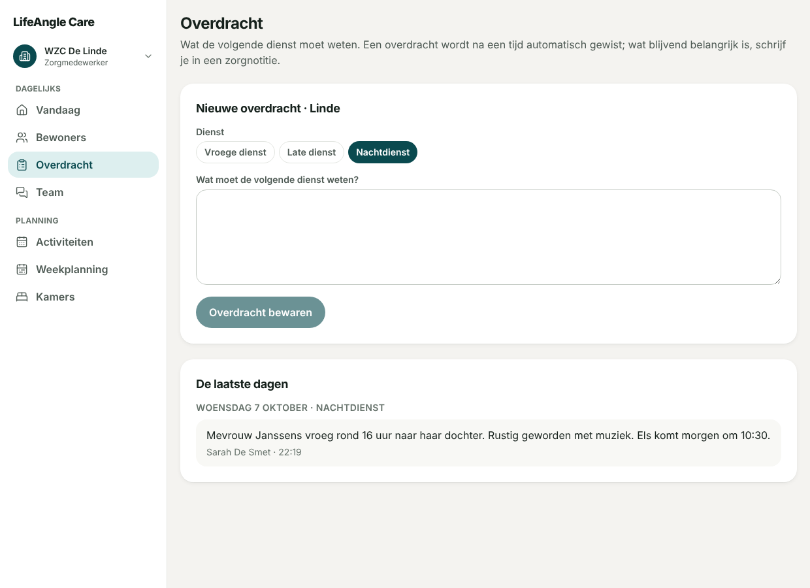
Een overdracht wordt na een tijd automatisch gewist. Wat blijvend belangrijk is, schrijf je in een zorgnotitie op de pagina van de bewoner. Een zorgnotitie kan je niet aanpassen of wissen, wel corrigeren. Vink Ook voor de familie aan als de familie ze mag lezen.
10. Als iets niet lukt
| Wat je ziet | Wat je doet |
|---|---|
| De bewoner staat niet in Beheer na het koppelen | Wacht een minuut of klik in een ander venster en terug. Staat de koppeling bij de familie wel onder Woonzorgcentrum? Dan is ze gelukt. |
| "Deze code klopt niet" | Er werd een nieuwe code gemaakt, of een teken is verkeerd overgetypt. Kopieer de huidige code opnieuw uit Beheer. |
| "Deze uitnodiging is verlopen", "al gebruikt" of "ingetrokken" | Maak in Beheer een nieuwe uitnodiging, of stuur ze opnieuw bij Openstaande uitnodigingen. |
| "Deze uitnodiging is voor …" | Uitloggen en inloggen met het adres waarop de uitnodiging kwam. |
| Geen code in de mail ontvangen | Kijk bij ongewenste mail. Komt er nooit iets, dan is de mailverzending van het project nog niet ingesteld (zie docs/LIVEGANG.md, stap 4). |
| "Je staat nog op geen afdeling" | De beheerder zet je op een afdeling: Beheer → Medewerkers → + Afdeling. |
| "Je bent niet toegewezen aan deze bewoner" | Vraag de coördinator of de beheerder om een toewijzing. |
| Een importrij met "fout" | De afdeling bestaat niet (maak ze eerst aan) of het e-mailadres is onvolledig. |
11. Checklist per bewoner
- De familie heeft een account en is familiebeheerder.
- De familie heeft gekoppeld: bij Wie ziet wat → Woonzorgcentrum staat het woonzorgcentrum.
- Afdeling en kamer zijn ingevuld.
- Minstens één medewerker is toegewezen.
- Bij vertrek: verblijf beëindigd, met de juiste reden.